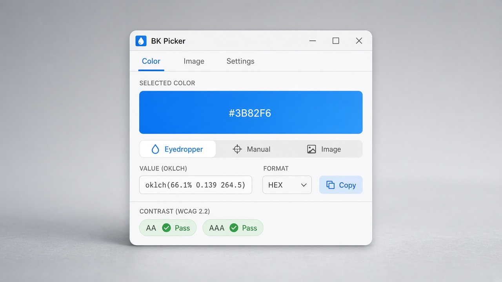
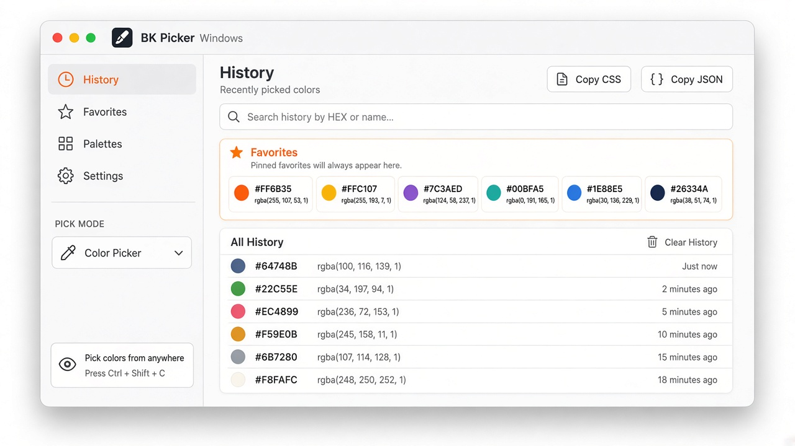
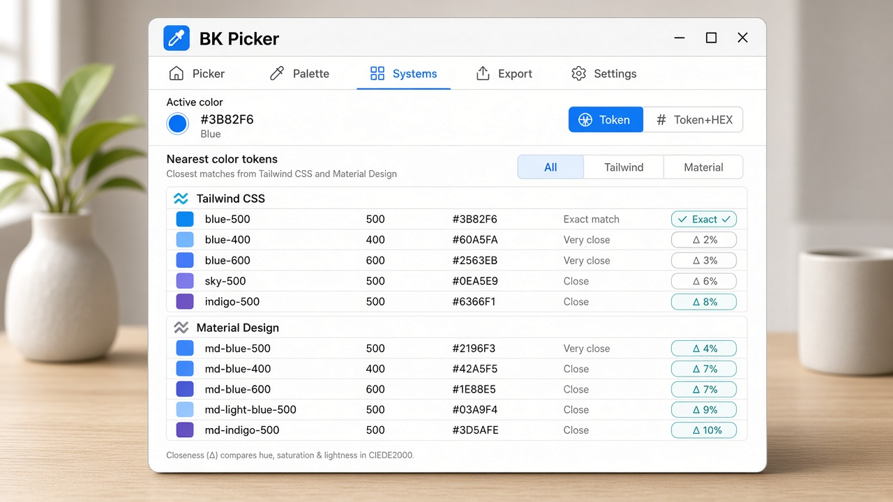
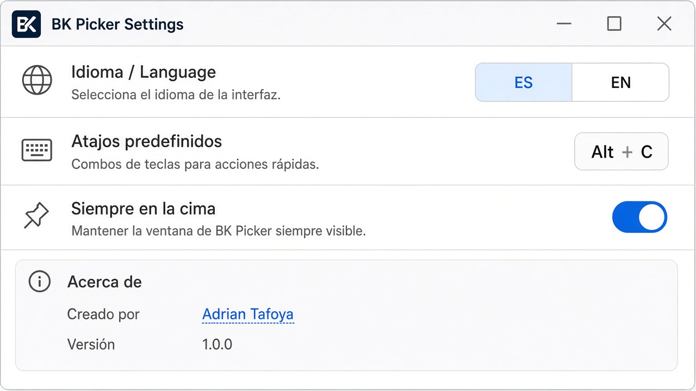

Pipeta + lupa
Atajo global para captura rápida, o modo preciso con lupa.
Captura un color de la pantalla o de una imagen y cópialo listo para pegar en CSS o Figma: HEX, OKLCH, HSL moderno, tokens y contraste AA/AAA.




Atajo global para captura rápida, o modo preciso con lupa.
HEX, HEX+A, RGB, HSL moderno y OKLCH en un clic.
Matches Tailwind, Material, CSS named y Bootstrap.
Archivo, URL, arrastrar o pegar desde el portapapeles.